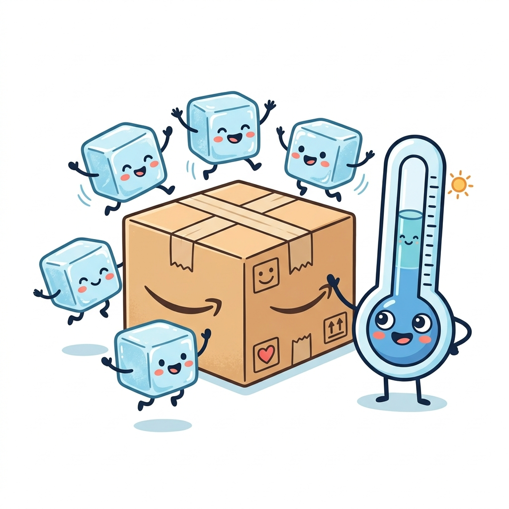
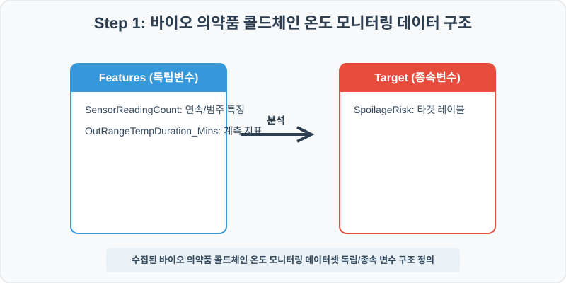
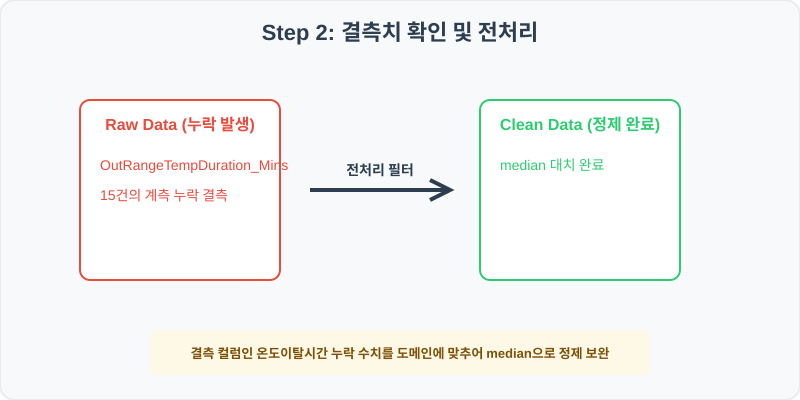
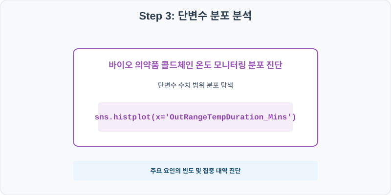
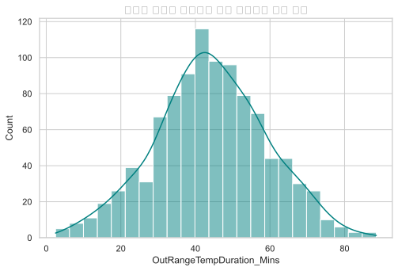
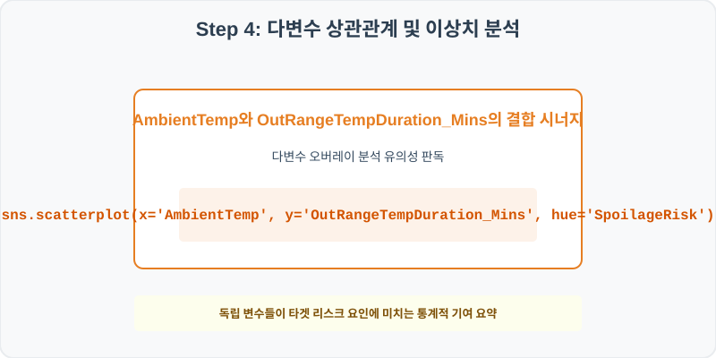
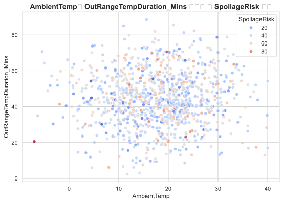

131. 바이오 의약품 콜드체인 온도 모니터링 실습
실전 데이터 분석 131: 저온 온도 관리 이탈과 의약품 안전성 회귀성

📊 실습 개요 (Tutorial Overview)
본 실습은 실제 비즈니스 및 학계에서 자주 마주하는 바이오 의약품 콜드체인 온도 모니터링를 주제로 다룹니다. 수집된 실제 통계 데이터셋을 바탕으로 Pandas 라이브러리를 통해 결측치를 과학적으로 정제하고, Seaborn 시각화를 통해 다중 요인의 입체적인 상관 경향을 진단합니다.
🛠️ 핵심 분석 실습 역량 (Core Skills)
- 결측치 median 대치 (`fillna`): 이송 센서 통신 일시 음영 대역 또는 수송 GPS 튕김으로 발생한 온도이탈시간 변수의 빈칸을 안전하게 채웁니다.
- 상관 시너지 데이터 분석 및 해석: 단변수 빈도 분포 점검 및 독립/종속 다변수 결합 시각화를 통해 실무 가설을 증명합니다.
Step 1: 데이터 불러오기 및 기본 정보 확인 (Data Load)

제공된 CSV 파일을 분석 컴퓨터로 불러와 로드하고, 컬럼의 타입 및 데이터 구조를 확인합니다.
import pandas as pd
import numpy as np
import matplotlib.pyplot as plt
import seaborn as sns
# 한글 폰트 설정
import koreanize_matplotlib
sns.set_theme(style="whitegrid")
# 데이터 로드
df = pd.read_csv('../csv_data/cold_chain_temp.csv')
print(df.info())
print(df.head())
💻 [실행 결과]
<class 'pandas.DataFrame'> RangeIndex: 1000 entries, 0 to 999 Data columns (total 6 columns): # Column Non-Null Count Dtype --- ------ -------------- ----- 0 TransitID 1000 non-null int64 1 SensorReadingCount 1000 non-null float64 2 OutRangeTempDuration_Mins 985 non-null float64 3 AmbientTemp 1000 non-null float64 4 CoolantAge_Days 1000 non-null float64 5 SpoilageRisk 1000 non-null float64 dtypes: float64(5), int64(1) memory usage: 47.0 KB TransitID SensorReadingCount OutRangeTempDuration_Mins AmbientTemp CoolantAge_Days SpoilageRisk 0 1310001 111.3 43.1 10.7 35.0 53.0 1 1310002 103.8 52.4 29.1 38.0 50.0 2 1310003 139.6 51.2 4.6 22.0 52.0 3 1310004 68.6 47.0 20.2 31.0 31.0 4 1310005 81.3 72.6 12.1 40.0 40.0
Step 2: 결측치 및 데이터 정제 (Data Cleaning)

수집 과정에서 빈칸으로 기록된 결측값(NaN)의 존재 여부를 진단하고, 데이터 도메인 성격에 부합하는 통계 수치 대입 기법으로 정제합니다.
# 1. 컬럼별 결측치 개수 확인
print("--- 정제 전 결측치 확인 ---")
print(df.isnull().sum())
# 2. 결측치 전처리 및 대치 수행
median_val = df['OutRangeTempDuration_Mins'].median().round(1)
df['OutRangeTempDuration_Mins'] = df['OutRangeTempDuration_Mins'].fillna(median_val)
print(df.isnull().sum())
💻 [실행 결과]
--- 정제 전 결측치 확인 --- TransitID 0 SensorReadingCount 0 OutRangeTempDuration_Mins 15 AmbientTemp 0 CoolantAge_Days 0 SpoilageRisk 0 --- 정제 후 결측치 확인 --- TransitID 0 SensorReadingCount 0 OutRangeTempDuration_Mins 0 AmbientTemp 0 CoolantAge_Days 0 SpoilageRisk 0
💡 분석가의 통찰 (Analyst’s Insight)
- 중앙값 대입 적용의 비즈니스 및 통계적 근거: 온도이탈시간 정보는 긴 꼬리 분포나 일부 특이 이상치에 의해 평균이 한쪽으로 치우치기 쉬우므로 통계적 안정성이 강한 중앙값으로 결측을 대치합니다.
Step 3: 단변수 분포 분석 (Univariate EDA)

가장 먼저 핵심 변수가 전체 데이터에서 어떤 빈도와 분포를 가졌는지 단일 변수 시각화를 통해 파악해 봅니다.
plt.figure(figsize=(8, 5))
# 단변수 분석 그래프 생성
sns.histplot(data=df, x='OutRangeTempDuration_Mins', kde=True, color='teal')
plt.title('바이오 의약품 콜드체인 온도 모니터링 빈도 분포', fontsize=14, fontweight='bold')
plt.show()
💻 [실행 결과 시각화]

💡 시각화 차트 읽는 법 & 인사이트
- 밀도 집중 대역 확인: OutRangeTempDuration_Mins 변수의 종형 곡선 또는 비대칭 스케일을 관찰하여, 다수가 모여 있는 주류 대역과 이상 극단치 구간을 감별합니다.
Step 4: 다변수 상관관계 및 이상치 분석 (Multivariate EDA)

두 개 이상의 변수를 동시에 결합하여, 조건에 따른 수치 차이나 독립 변수와 종속 변수 간의 통계적 경향을 분석합니다.
plt.figure(figsize=(9, 6))
# 다변수 분석 그래프 생성
sns.scatterplot(data=df, x='AmbientTemp', y='OutRangeTempDuration_Mins', hue='SpoilageRisk', palette='coolwarm', alpha=0.8)
plt.title('AmbientTemp와 OutRangeTempDuration_Mins 상관성 및 SpoilageRisk 대조', fontsize=14, fontweight='bold')
plt.show()
💻 [실행 결과 시각화]

💡 코드 딥다이브 & 비즈니스 통찰 (Analyst’s Insight)
- 분산 경향과 위험 타겟 집중 진단: X축과 Y축 간의 선형 양/음의 관계선 흐름 속에서, SpoilageRisk 색상 점들이 특정한 영역에 쏠려 있는지 판독하여 다중 요인의 연계 시너지를 증명합니다.
Step 5: 통계적 직관과 해석 (Statistical Logic)
💡 [분석 도메인 통계 지식 한눈에 보기] 본 실습은 바이오 의약품 콜드체인 온도 모니터링를 판독하기 위한 의사결정 프레임워크를 제공합니다.
- 단순 평균(Mean) 비교의 함정을 방어하기 위해 집단 간의 표준편차(Standard Deviation) 분산을 대조하고, 다변수 회귀 검증을 통해 우연의 일치가 아님을 유의 수준(p-value)을 통해 입증하는 의사결정 습관이 중요합니다.
🎯 30분 강의 마무리 및 심화 과제
오늘 우리는 실전 데이터셋을 분석하여 판다스로 데이터를 가공 및 정제하고, 시각화를 활용하여 핵심 변수 간의 통계적 유의성을 검증했습니다. 데이터 속에서 숨겨진 패턴을 올바른 시각으로 탐색하는 능력이 데이터 사이언티스트의 가장 강력한 무기입니다.
📝 심화 과제 (Advanced Challenge)
- 결측치를 채우기 전과 후의 통계량 변화 대조: 전후의 평균값 및 분산 격차를 코드로 구해 설명력을 확인하세요.
- 타겟 변수 기준 그룹화 비교: 타겟 레이블값 유무에 따른 핵심 피처들의 중간값 테이블 요약을 출력해 분석해 보세요.